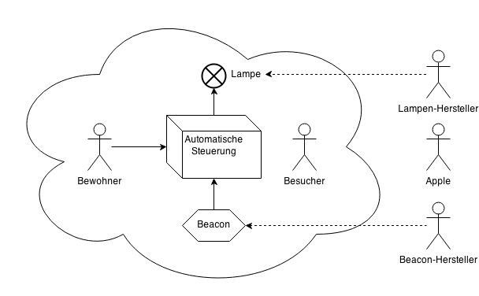
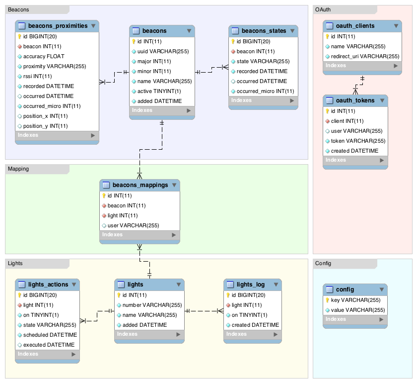

Diese Arbeit entstand im Rahmen der Semesterarbeit an der Zürcher Hochschule
für Angewandte Wissenschaften (ZHAW) in Zürich.
Dieses Dokument wurde in HTML geschrieben und mit Hilfe von
Prince XML in ein PDF-Dokument
umgewandelt. Die verwendeten Schriftart ist Helvetica Neue, entwickelt
von D. Stempel AG und basierend auf Helvetica von Max
Miedinger.
Inhaltsverzeichnis
Einleitung
Ausgangslage
Heimautomatisierung (engl. Home Automation) bezeichnet die intelligente
Verknüpfung von Sensoren und anderen technischen Geräten innerhalb der eigenen
Wohnräume zur Steigerung des Wohnkomforts. Effizientere Technik und
verbraucherorientierte Produkte haben dies in den letzten Jahren auch für
normale Konsumenten realisierbar gemacht.
Apple hat in der neusten Version seines mobilen Betriebssystems, iOS 7, eine
neue Möglichkeit zur Lokalisierung des Benutzers in geschlossenen Räumen
hinzugefügt. Die Technik basiert auf Bluetooth Low Energy, trägt den Namen
iBeacon und kann verwendet werden um das Betreten oder Verlassen eines Raums
zu registrieren. Eine Dokumentation des Protokolls wurde von Apple angekündigt
jedoch noch nicht veröffentlicht.
Die Verwendung von bestehenden Geräten, wie Smartphones, ist für die
Heimautomatisierung interessant, da diese vielfältige Möglichkeiten bieten und
nicht separat angeschafft werden müssen. Eine optimale Ergänzung dazu stellt
die Philips hue dar. Es handelt sich dabei um LED-Lampe in Form einer Glühbirne,
welche über eine API verfügt und so gezielt gesteuert werden kann.
Ziele der Arbeit
Im Rahmen dieser Semesterarbeit soll analysiert werden, wie die neuen
Funktionen von iOS 7 optimal verwendet werden können, um eine einfache
Heimautomatisierung zusammen mit der Philips hue zu ermöglichen. Es soll eine
zentrale Web-Applikation entwickelt werden, welche die Bewegungen eines
Benutzers innerhalb der eigenen Wohnräume speichert und die Beleuchtung der
Räume entsprechend steuert. Der Standort des Benutzers wird dabei von einer
iPhone-App ermittelt und an die Web-Applikation gemeldet.
Aufgabenstellung
Im Rahmen dieser Semesterarbeit werden vom Studenten folgende Aufgaben ausgeführt:
Analyse der Funktionalitäten von iBeacon.
Untersuchung des auf Bluetooth Low Energy basierenden Protokolls von iBeacon.
Anforderungsdokumentation für die Automatisierung der Beleuchtung einer Wohnung.
Konzeption und Design des Software-Prototyps zur Umsetzung der dokumentierten Anforderungen.
Implementation eines Prototyps bestehend aus einer iPhone-App zur Lokalisierung des Benutzers und einer Web-Applikation zur Überwachung und Steuerung der Beleuchtung.
Verifikation des Software-Prototyps in einem Feldversuch und Analyse der Ergebnisse.
Demonstration des Software-Prototyps.
Vorwort
Vermutung, dass Ortung zu ungenau, Problem wurden mit anderen Geräten beobachtet.
Ebenfalls wurde von Apple noch keine offizielle Dokumentation zum iBeacon-Protokoll veröffentlicht.
Hue App bietet Steuerung der Beleuchtung über Geo-Location (Wifi, GPS), persönliche
Erfahrung schlecht, Ortunung zu ungenau, Beleuchtung aus und ein während Zuhause.
Projektablauf
Das folgende Gantt-Diagramm gibt einen Überblick über den effektiven Ablauf des
Projekts und dessen wichtigsten Meilensteine.
November
Dezember
Januar
Februar
März
April
Mai
Kick-Off
◆ 13.11.13
Analyse iBeacons
Design Review
◆ 22.01.14
Konzeption Software
Umsetzung Software
Dokumentation
Feldversuch
Abgabe Dokumentation
16.05.13 ◆
Projektablauf
Aufwand
Laut dem Reglement für Semesterarbeiten sollte der Aufwand 120 Stunden betragen.
Entsprechend wurde die Planung darauf ausgelegt. Die genauen technischen
Anforderungen wurden allerdings erst während dem Projekt klar und führten zu
einer iterativen Softwareentwicklung, wodurch mehr Zeit für die
Konzeptions- und Umsetzungsphasen gebraucht wurde.
Beschreibung
Soll
Ist
Analyse iBeacons
10 h
6 h
Konzeption Software
10 h
14 h
Umsetzung Web-Applikation
25 h
19 h
Umsetzung Automatische Steuerung
15 h
35 h
Umsetzung App
25 h
12 h
Messung RSSI
-
23 h
Dokumentation schreiben
35 h
39 h
Total
120 h
147 h
Soll / Ist Vergleich Aufwand
iBeacon
Beschreibung
Bei iBeacon handelt es sich um eine von Apple eingetragene Marke und beschreibt
einen proprietären Technologie für die Lokalisierung eines iPhones mithilfe
von Bluetooth Low Energy (BLE). Es setzt das Betriebssystem iOS 7 oder neuer,
sowie ein iPhone mit Bluetooth 4.0 voraus. Das Wort Beacon wird zur Beschreibung
eines Geräts mit eigener Sromversorgung verwendet, welches einen Standort markiert.
iBeacon Logo
Kommt ein iPhone in die Nähe eines Beacons, wird eine auf dem iPhone laufende App
vom Betriebssystem benachrichtigt. Die App kann dann zusätzlich die Distanz zum
Beacon abfragen und eigene Aktionen ausführen.
Bluetooth Low Energy
Bluetooth Low Energy (BLE) ist ein Funkprotokoll und Teil der
Bluetooth 4.0-Spezifikation. Vermarktet wird BLE auch als Bluetooth Smart.
Es wurde speziell für kleine Geräte mit limitierten Akkukapazitäten entwickelt und
kommt deshalb oft auf Smartphones zum Einsatz.
Bluetooth Low Energy-Geräte nutzen das Generic Attribute Profile (GATT), um ihre
Funktionalität zu beschreiben. GATT sieht Services und Characteristics, welche
ein Gerät im Rahmen einen Profils anbieten kann. Dabei besteht eine
hierarchische Beziehung zwischen Services und Characteristics. Profile dienen
zur formellen Gruppierung von mehreren Services.
GATT Profilhierarchy
Core Bluetooth
Apple bietet mit Core Bluetooth eine vereinfachte Schnittstelle zur Verwendung
von BLE an, welche die BLE-Protokolle abstrahiert.
Aufbau Core Bluetooth
Dabei wird bei der Programmierung zwischen zwei Rollen welche nach dem
Client-Server-Prinzip aufgebaut sind unterschieden: Central und Peripheral.
Ein «Peripheral» (Server) stellt dabei Daten zur Verfügung und kann sich selbst über
das regelmässige Aussenden von Informationen ankündigen (Advertising).
Ein «Central» (Client) hingegen sucht nach Peripherals, und verarbeitet
dessen Informationen in weitern Aktionen. Zum Beispiel kann ein digitaler
Pulsmesser (Peripheral) mit BLE die aktuelle Herzfrequenz an eine iOS-App (Central)
übermitteln und die iOS-App zeigt dann diese dem Benutzer an.
Rolen in Bluetooth Low Energy
Analyse iBeaon
Um der Funktionsweise von iBeacon auf die Spur zu kommen, wurde mit der
Einarbeitung in die Grundtechnologie, auf der iBeacon basiert begonnen. Mit dem
indirekten Ziel, einen Computer als iBeacon zu nutzen, wurde mit der Analyse
auf einem Mac begonnen. Dazu wurde das bereits beschrieben Core Bluetooth Bibliothek verwendet,
welche seit Version 10.9 von Mac OS X nicht nur auf iOS zur Verfügung steht.
Damit sollte ein einfaches BLE-Profile veröffentlicht werden.
Anhand des
Kapitels «Performing Common Peripheral Role Tasks» (Seite 16)
aus der von Apple zur Verfügung gestellten Dokumentation
«Core Bluetooth Programming Guide»
wurde ein minimales Programm mithilfe der Programmierumgebung Xcode erstellt,
welches eigene BLE-Dienste anbietet.
Konkret wurde mit der Beispiel-Anwendung mit einem Service für Herzfrequenzen mit dem
UUID 180D und mit einer Charakteristik für die Position des Sensors am
Körper mit der UUID 2A38 entwickelt.
Die iPhone-App
LightBlue
bietet die Möglichkeit, eine Verbindung zu beliebigen BLE-Geräte aufzubauen und
die von den Geräten angebotenen Dienste abzurufen. Die App zeigt zudem die vom
Gerät versendeten Advertising-Daten an. Die App wurde erfolgreich dazu verwendet,
die von der Mac-Anwendung publizierten Services und Characteristics zu finden.
Screenshot LightBlue
Wie im Kapitel Turn Your iOS Device Into a Beacon
der Dokumentation zu den iBeacons beschrieben, wurde eine einfach iPhone-App
erstellt, welche die Signale eines iBeacons vom iPhone aussendet. Dazu benötigt
werden die beiden Bibliotheken CoreBluetooth.framework und CoreLocation.framwork.
Jedes Beacon braucht eine eindeutige UUID, anhand welcher es identifiert wird.
Um die Analyse des Protokols zu vereinfachen und die ID einfach auffindbar wurde
die UUID FFFFFFFF-FFFF-FFFF-FFFF-FFFFFFFFFFFF definiert. Als Major
wurde der Wert 00 (0) verwendet und als Minor FF (65535).
NSUUID *proximityUUID = [[NSUUID alloc] initWithUUIDString:@"FFFFFFFF-FFFF-FFFF-FFFF-FFFFFFFFFFFF"];
// Create the beacon region.
CLBeaconRegion *beaconRegion = [[CLBeaconRegion alloc] initWithProximityUUID:proximityUUID major:0 minor:65535 identifier:@"ch.zhaw.voglefab.debug"];
// Create a dictionary of advertisement data.
NSDictionary *beaconPeripheralData = [beaconRegion peripheralDataWithMeasuredPower:nil];
// Start advertising your beacon's data.
[self.peripheralManager startAdvertising:beaconPeripheralData];
Beispielanwendung von Core Bluetooth
Diese App wurde auf einem zweiten iPhone installiert und gestartet. Verbindet man
sich jedoch nun mit LightBlue auf dem ersten iPhone mit dem zweiten iPhone, werden
in LightBlue nur die Services Battery Service und Current Time Service
angezeigt - iBeacon wird also kein Service im
GATT-Protokoll. Auch bei den Advertisement-Informationen ist das iBeacon in LightBlue
nicht sichtbar. Trotz der neuen Erkentniss stellt sich dieser Lösungsansatz
somit aber als Sackgasse heraus.
Screenshot LightBlue iBeacon
In einem weitern Schritt wurde auch nach Analyse-Tools auf dem Mac gesucht.
Schliesslich wurde das Software-Packet Hardware IO Tools for Xcode gefunden,
welches von Apple für Entwickler gratis zum Download bereit gestellt wird.
Dieses enthält unter anderem die Tools PacketLogger und
Bluetooth Explorer, welche für die Analyse der iBeacons verwendet wurden.
Screenshot Bluetooth Explorer
Das neue Ziel war nun, die Signale eines iBeacons auf dem Mac zu analysieren. Die
Software PacketLogger bietet dazu eine Möglichkeit, die vom Computer
empfangenen BLE-Packete zu analysieren. Scan man mit dem Bluetooth Explorer
nach BLE-Geräten, werden im PacketLogger die empfangenen BLE Advertisements angezeigt.
Screenshot PacketLogger
Dadurch wurde schlussendlich das Advertisement von der iPhone-App mit den Daten
gefunden, welche das iBeacon-Signal aussendet. Verwendet wird hier die
hexadezimale Schreibweise von Octet, zwei Hexzahlen entsprechen also einem Byte
resp. 8 Bits.
Der Aufbau des Advertisements wird auf Kapitel 11 Advertising
and Scan Response data format im Volume 3 der
Bluetooth-Spezifikation
erklärt. Ein Advertisement besteht aus mehreren Elementen, welche eine variable Länge haben.
Am Anfang jedes Elements steht seine eigene Länge gefolgt vom Typ des Elements.
Struktur Advertising and Scan Response
Angewendet auf das empfangene Advertisement ergibt sich folgendes Format für ein
iBeacon. Gemäss Spezifikation enthalten die ersten zwei Octets des Manufacturer
Sepcific Data den Company Identifier Code, welcher auf
der Website
der Bluetooth SIG dokumentiert ist.
Byte
Beschreibung
Wert
02
Length
2
01
AD Type
Flags
1A
Flags
LE General Discoverable Mode Simultaneous LE and BR/EDR (Controller) Simultaneous LE and BR/EDR (Host)
1A
Length
26
FF
AD Type
Manufacturer Specific Data
4C
Company Identifier Code
Apple, Inc.
00
02
Fixer Wert
iBeacon Identifier
15
FF
iBeacon UUID
FFFFFFFF-FFFF-FFFF-FFFF-FFFFFFFFFFFF
FF
FF
FF
FF
FF
FF
FF
FF
FF
FF
FF
FF
FF
FF
FF
00
iBeacon Major
0
00
FF
iBeacon Minor
65535
FF
C5
Fixer Wert
Measured power
Bluetooth Advertisement iBeacon
Das iBeacon-Format ist also innerhalb der Manufacturer Specific Data im
BLE-Protokoll gekapselt. Dies konnte auch mit dem Bluetooth Explorer
verfiziert werden, der ebenfalls die Manufacturer Data anzeigt. Um ein iBeacon zu
erkennen oder zu simulieren, braucht man also legendlich ein Advertisement mit
den entsprechenden Manufacturer Specific Data zu senden/empfangen.
Screenshot Bluetooth Explorer nach Scan
Estimote Beacon
Für das Projekt wurden iBeacons von Estimote eingesetzt. Die «Estimote Beacons»
wurden hauptsächlich für den Einsatz in Läden entwickelt und enthalten einen
Bluetooth-Sender, der das iBeacon-Signal sendet. Da iBeacon eine neue
Technologie ist, existierten zu Beginn des Projekt nur wenige Anbieter, welche
Hardware für iBeacons anboten. Die Estimote Beacons wurde aufgrund ihrer
Verfügbarkeit gewählt.
Estimote verfügt über eine eigene iPhone-App, mit welcher sich die Signalstärke
und der Sendeintervall der Beacons konfigurieren lässt. Die Beacons werden
eigentlich wasserfest produziert. Leider waren die Batterien nach 5 Monaten
aber bereits leer. Per Mail erhielt ich dann vom Estimote-Support eine Anleitung
zum Austausch der Batterien. Für den Austausch muss das Beacon mit einem Messer
aufgeschnitten werden - die Wasserfestigkeit geht dadurch natürlich verloren.
Foto Estimote Beacon
Der Austausch der Batterie war dennoch interessant, da ich dadurch einen Blick
in den Inhalt der Beacons erhalten konnte. Die Beacons bestehen aus einer
Leiterplatte mit Schaltkreisen. Die Batterie selbst ist eine Knopfbatterie vom
Typ CR2450 und kann im Detailhandel gekauft werden.
Messung RSSI
RSSI
Da sich die Signalstärke in den Estimote Beacons konfigurieren lässt, stellt sich
die Frage, wie die optimale Konfiguration innerhalb einer Wohnung aussieht.
Für folgende Wohnung wurden mehrere Messungen durchgeführt, um für jedes Beacon
eine Signalstärke zu finden, die den Anforderungen entspricht.
In einem ersten Schritt wurden die Bauzeichnungen der Wohnung eingescannt und
mit der Gratis-Software Sweet Home 3D
digitalisiert. Die Wohnung besteht aus zwei Stockwerken, welche mit einer Treppe
verbunden sind. Auf dem ersten Stock befindet sich der Wohn- und Bürobereich.
Visualisierung erster StockVisualisierung zweiter Stock
Im zweiten Stock finden sich zwei Schlaf- sowie ein Badezimmer. Das Badezimmer
befindet sich in der Visualisierung auf der rechten Seite.
In einem nächsten Schritt wurde die Wohnung in Raster unterteilt. Jedes Quadrat
hat im Raster eine Seitenlänge von 120 cm. Diese Länge wurde aufgrund der
Gangbreite von 120 cm gewählt, da der Gang normalerweise in der Mitte
durchschritten wird und eine mehrfache Messung dort nur wenig Sinn machen würde.
Das Raster wurde mit Malerklebband auf die Wohung übertragen, um die Durchführung
der Messung effizient zu gestalten.
Für die Messung wurde eine iPhone-App entwickelt, auf welcher sich die
Signalstärke sowie die Koordinaten des iPhones innerhalb der Wohnung
konfigurieren lassen. Die App empfängt alle iBeacon-Signale und deren RSSI-Wert.
Aktiviert man dann die Messung, wartet die App 10 Sekunden
und überträgt dann die empfangenen RSSI-Werte an einen Web-Server zur Auswertung.
Screenshot iPhone-App
Gemessen wurde auf einer Höhe von 90 cm. Auf dieser Höhe befindet sich das iPhone
normalerweise auch, wenn es in der Hosentasche getragen wird. Für die Messung
wurde das iPhone auf einem Stativ montiert, damit die Messung ohne Störungsquellen
durchgeführt werden kann.
Fotos Messung
Für die Messung wurde das Advertisting Interval alle Estimote Beacons auf 500 ms
eingestellt. Das iPhone hatte zu Beginn einer Messung jeweils 100% Akku.
Der Batteriestand fiel während der Messung nie unter 60%. Auch die Estimote
Beacons hatten frische Batterien.
Während eines ersten Probelauf mit 10 Sekunden warten und 30 Sekunden messen
zeigte sich, dass die 10 Sekunden Wartezeit genügen, um sich ausserhalb des
Messbereichs zu begeben. Die 30 Sekunden Messzeit erwiesen sich allerdings als
zu lang, anhand der aufgezeichneten Daten wurde deshalb die Messzeit auf 20 Sekunden
reduziert.
Ablauf einer Messung:
Zu messender Signalstärke definieren
Alle iBeacons auf die definierte Signalstärke einstellen
App auf iPhone starten
Signalstärke in App eintragen
iPhone auf Stativ montieren
Stativ in der Mitte eines Felds platzieren
Koordinaten von Plan ablesen und in App eintragen
Schalter "Messung" in App auf aktiv stellen
Sich innerhalb von 10 Sekunden aus dem Messfeld entfernen
30 Sekunden warten
Zurück zu Schritt 6 bis alle Felder/Koordinaten gemessen wurden
Messprotokolle
Die folgenden Messprotokolle geben Auskunft über die Durchführung der Messungen.
Signalstärke
-12 dBm
Datum
01.05.2014
Zeit Beginn
10:46
Zeit Ende
12:40
Messende Person
Fabian Vogler
Notizen
Beim Start der Messung des 2. Stockwerks wurde festgestellt, dass ein
Beacon nicht gemessen wurde. Offenbar hat das Beacon kurzzeitig keine
Daten gesendet. Der Wert wurde gelöscht und die Messung für dieses
Feld erfolgreich wiederholt.
Protokoll Messung 1
Signalstärke
-4 dBm
Datum
01.05.2014
Zeit Beginn
16:39
Zeit Ende
17:58
Messende Person
Fabian Vogler
Notizen
Es sind keine Probleme aufgetreten.
Protokoll Messung 2
Signalstärke
-20 dBm
Datum
06.05.2014
Zeit Beginn
09:12
Zeit Ende
10:31
Messende Person
Fabian Vogler
Notizen
Neu wurde ein iPad zur laufenden Überwachung der Resultate eingesetzt. Es sind jedoch keine Probleme festgestellt worden.
Protokoll Messung 3
Bei den nachfolgenden Auswertungen wurde die Position des gemessenen Beacons
im Wohnungsplan jeweils durch eine schwarze Raute gekennzeichnet.
Auswertung Beacon 1
Dieses Beacon befindet sich im Wohnzimmer der Wohnung. Die Signalstärke
-12 dBm wird aufgrund der guten Abdeckung des ganzen ersten Stocks für dieses
Beacon festgelegt.
Dieses Beacon befindet sich in einem Schlafzimmer. Um zu verhindern, dass das
Licht im Schlafzimmer unnötig brennt wird die Signalstärke dieses Beacons auf
-4 dBm festgelegt.
Dieses Beacon befindet sich direkt im Eingansbereich der Wohnung und soll die
Beleuchtung im Gang steuern. Es wird deshalb die Signalstärke -4 dBm für
dieses Beacon festgelegt.
Das manuelle Bedienen von Lichtern in einer Wohnung ist oft mühsam und
ineffizient. Die Lichtschalter sind an ungünstigen Orten angebracht oder das
Licht wird beim Verlassen des Hauses auszuschalten vergessen.
Es soll deshalb eine Softwarelösung entwickelt werden, welche die Lichter in
einem Haus automatisch steuert. Betritt der Bewohner einen Raum, sollen die
Lichter im Raum angehen - beim Verlassen des Raums sollen die Lichter wieder
automatisch ausgehen. Dies spart Strom und erleichtert den Alltag.
Stakeholder
Die folgenden Stakeholder haben einen direkten oder indirekten Einfluss auf die
Anforderungen. Diese Stakeholder finden sich ebenfalls im nachfolgenden
Kontextdiagramm.
Stakeholder
Beschreibung
Bewohner
Der Bewohner der Wohnung ist die massgebende Zielperson. Die Anwendung soll sein Leben vereinfachen, die funktionalen Anforderungen sind deshalb auf Ihn ausgelegt.
Besucher
Besucher der Wohnung wissen im Normalfall nichts über die im Hintergrund laufende Anwendung und müssen vor Überraschungen geschützt werden.
Beacon-Hersteller
Der Beacon-Hersteller entwickelt und liefert die nötige Hardware in Form der Beacons für die Anwendung. Er hat einen Einfluss auf die technischen Anforderungen.
Lampen-Hersteller
Der Lampen-Hersteller entwickelt und produziert die steuerbaren Lampen. Er definiert die technischen Möglichkeiten der Beleuchtung.
Apple
Apple als Entwickler des iBeacon-Formats definiert die technischen Vorgaben und nimmt evtl. in Zukunft Änderungen am Format vor.
Stakeholder
Systemkontext
Die Kontextabgrenzung dient zur Definition der Elemente, welche einen Einfluss
auf das System haben. Das System selbst, die automatische Steuerung, wird durch
den Bewohner und die Beacons beeinflusst und steuert das Licht. Besucher kommen
innerhalb des Systemkontexts ebenfalls vor, haben aber keinen direkten Einfluss
auf das System.

Kontextdiagramm
Funktionale Anforderungen
Die funktionalen Anforderungen wurden mit der Beobachtungstechnik und anhand
der eigenen Erfahrungen definiert und als Anwendungsfälle festgehalten.
Das folgender Anwendungsfalldiagramm gibt einen Überblick über die erfassten
Anwendungsfälle. Es gibt zwei Aktoren, den Benutzer sowie die automatische
Steuerung.
Anwendungsfalldiagramm
Die Anwendungsfälle wurden mit den im folgendem Schema definierten Attributen
erfasst.
Attribut
Beschreibung
Identifier
Eindeutige Nummer des Anwendungsfalls.
Name
Kurzname des Anwendungsfalls.
Priorität
Dringlichkeit des Anwendungsfalls mit dem Wertebereich tief, mittel und hoch.
Auslöser
Beschreibung des Ereignisses, welches diesen Anwendungsfall relevant macht.
Beschreibung
Kurze Zusammenfassung des Anwendungsfalls.
Vorbedingungen
Voraussetzungen welche für die Ausführung dieses Anwendungsfalls erfüllt sein müssen.
Standardablauf
Schritte zur erfolgreichen Ausführung des Anwendungsfalls.
Ergebnis
Das Resultat nach der erfolgreichen Ausführung des Standardablaufs.
Ausnahmen
Eventuell auftrettende Ausnahmesituationen sowie deren Konsequenzen.
Attribute Anwendungsfall
Anwendungsfälle
Identifier
UC01
Name
Neues Beacon erfassen
Priorität
mittel
Auslöser
Der Benutzer konfiguriert das System zum ersten Mal oder ist in Besitz eines neuen Beacons gekommen.
Beschreibung
Der Benutzer erfasst ein neues Beacon mit einem eigenen Namen.
Vorbedingungen
Der Benutzer muss die UUID sowie den Major- und den Minor-Wert des Beacons kennen.
Der Benutzer ist in der Anwendung eingeloggt und befindet sich auf der Ansicht zur Konfiguration der Beacons.
Standardablauf
Der Benutzer klickt auf «Beacon hinzufügen».
Es erscheint ein Formular zur Erfassung des Beacons.
Der Benutzer füllt den Namen, die UUID, den Major- und den Minor-Wert ein.
Der Benutzer klickt auf «Beacon speichern».
Das Beacon wird gespeichert.
Es wird wieder die Ansicht zur Konfiguration mit einer Erfolgsmeldung über die erfolgreiche Speicherung des Beacons angezeigt.
Ergebnis
Das neue Beacon erscheint auf der Konfigurationsansicht und kann einem Licht zugewiesen werden.
Ausnahmen
Es ist bereits ein Beacon mit der selben UUID, Major- und Minor-Werten erfasst; in diesem Fall soll das Beacon nicht gespeichert und eine Fehlermeldung angezeigt werden.
UC01 Neues Beacon erfassen
Identifier
UC02
Name
Beacon zu Lichtern zuweisen
Priorität
hoch
Auslöser
Der Benutzer konfiguriert das System zum ersten Mal, ist in Besitz eines neuen Beacons oder einer neuen Lampe gekommen.
Beschreibung
Der Benutzer weisst ein Beacon zu einem oder mehreren Lichtern zu.
Vorbedingungen
Es wurde ein Beacon erfasst.
Es ist mindestens eine Lampe vorhanden.
Der Benutzer ist in der Anwendung eingeloggt und befindet sich auf der Ansicht zur Konfiguration der Beacons.
Standardablauf
Der Benutzer wählt die gewünschten Lichter aus.
Der Benutzer klickt auf «Zuweisung speichern».
Die Zuweisung der Lichter zum Beacon wird gespeichert.
Es wird wieder die Ansicht zur Konfiguration mit einer Erfolgsmeldung über die erfolgreiche Speicherung der Zuweisung angezeigt.
Ergebnis
Die automatische Steuerung schaltet die ausgewälten Lichter an, sobald der Benutzer in der Nähe des Beacons ist.
UC02 Beacons zu Lichtern zuweisen
Identifier
UC03
Name
Namen eines Beacons ändern
Priorität
tief
Auslöser
Ein Beacon wurde neu positioniert oder es wurde ein Schreibfehler festgestellt.
Beschreibung
Der Benutzer ändert den Namen eines bestehenden Beacons.
Vorbedingungen
Das Beacon wurde zuvor erfasst.
Der Benutzer ist in der Anwendung eingeloggt und befindet sich auf der Ansicht zur Konfiguration der Beacons.
Standardablauf
Der Benutzer klickt bei dem gewünschten Beacon auf «Bearbeiten».
Es erscheint ein Formular mit dem Namen des Beacons.
Der Benutzer ändert den Namen des Beacons.
Der Benutzer klickt auf «Beacon speichern».
Das Beacon wird gespeichert.
Es wird wieder die Ansicht zur Konfiguration mit einer Erfolgsmeldung über die erfolgreiche Speicherung des Beacons angezeigt.
Ergebnis
Das Beacon erscheint mit dem geänderten Namen auf der Konfigurationsansicht.
UC03 Namen eines Beacons ändern
Identifier
UC04
Name
Beacon ausblenden
Priorität
tief
Auslöser
Ein Beacon wurde entfernt oder ist nicht mehr relevant.
Beschreibung
Der Benutzer markiert ein Beacon als inaktiv.
Vorbedingungen
Das Beacon wurde zuvor erfasst.
Der Benutzer ist in der Anwendung eingeloggt und befindet sich auf der Ansicht zur Konfiguration der Beacons.
Standardablauf
Der Benutzer klickt bei dem gewünschten Beacon auf «Bearbeiten».
Es erscheint ein Formular mit dem Status des Beacons.
Der Benutzer ändert den Status des Beacons auf «Inaktiv».
Der Benutzer klickt auf «Beacon speichern».
Das Beacon wird gespeichert.
Es wird wieder die Ansicht zur Konfiguration mit einer Erfolgsmeldung über die erfolgreiche Speicherung des Beacons angezeigt.
Ergebnis
Das Beacon wird in der Konfigurationsansicht in einer separaten Liste aufgeführt und kann nicht mehr Lichtern zugewiesen werden.
UC04 Beacon ausblenden
Identifier
UC05
Name
Beacon einblenden
Priorität
tief
Auslöser
Ein Beacon wurde wieder relevant nachdem es deaktiviert wurde.
Beschreibung
Der Benutzer markiert ein Beacon als aktiv.
Vorbedingungen
Das Beacon wurde zuvor erfasst.
Das Beacon ist inaktiv.
Der Benutzer ist in der Anwendung eingeloggt und befindet sich auf der Ansicht zur Konfiguration der Beacons.
Standardablauf
Der Benutzer klickt bei dem gewünschten Beacon auf «Bearbeiten».
Es erscheint ein Formular mit dem Status des Beacons.
Der Benutzer ändert den Status des Beacons auf «Aktiv».
Der Benutzer klickt auf «Beacon speichern».
Das Beacon wird gespeichert.
Es wird wieder die Ansicht zur Konfiguration mit einer Erfolgsmeldung über die erfolgreiche Speicherung des Beacons angezeigt.
Ergebnis
Das Beacon wird in der Konfigurationsansicht wieder normale dargestellt und kann Lichtern zugewiesen werden.
UC05 Beacon einblenden
Identifier
UC06
Name
Automatisch Licht einschalten
Priorität
hoch
Auslöser
Der Benutzer kommt in die Nähe eines Beacons, welches dem Licht zugewiesen ist.
Beschreibung
Das zugewiese Licht wird eingeschaltet.
Vorbedingungen
Das Beacon wurde zuvor erfasst und ist aktiv.
Das Beacon ist einem Licht zugewiesen.
Das Licht hat Strom (wurde also nicht durch einen Lichtschalter ausgeschaltet).
Der Benutzer hat die App installiert und diese erfolgreich autorisiert.
Standardablauf
Der Benutzer kommt in die Nähe des Beacons.
Ergebnis
Das Licht geht an und leuchtet.
UC06 Automatisch Licht einschalten
Identifier
UC07
Name
Automatisch Licht ausschalten
Priorität
hoch
Auslöser
Der Benutzer entfernt sich vom Beacon, welches dem Licht zugewiesen ist.
Beschreibung
Das zugewiese Licht wird nach 3 Minuten ausgeschaltet. Diese 3 Minuten Wartezeit
dienen auch zur Verhinderung von flackernden Lichtern, falls der Benutzer nur
kurzzeitig (z.B. aufgrund einer Signalschwankung) ausserhalb des Bereichs
gemeldet wird.
Vorbedingungen
Das Beacon wurde zuvor erfasst und ist aktiv.
Das Beacon ist einem Licht zugewiesen.
Das Licht leuchtet.
Der Benutzer hat die App installiert und diese erfolgreich autorisiert.
Standardablauf
Der Benutzer entfernt sich vom Beacon.
Der Benutzer bleibt 3 Minuten vom Beacon weg.
Ergebnis
Das Licht geht aus und leuchtet nicht mehr.
Ausnahmen
Der Benutzer nähret sich innerhalb von 3 Minuten wieder dem Beacon; das Licht wird in diesem Fall nicht ausgeschaltet.
UC07 Automatisch Licht ausschalten
Identifier
UC08
Name
Steuerung pausieren
Priorität
mittel
Auslöser
Eine Person zusätzliche Person (z.B. ein Besucher) betrit die Wohnung und möchte nicht im Dunkeln stehen, wenn der Benutzer mit der App einen anderen Raum betritt.
Beschreibung
Der Benutzer pausiert die automatische Steuerung für eine unbegrenzte Zeit.
Vorbedingungen
Der Benutzer ist in der Anwendung eingeloggt und befindet sich auf der Startseite.
Standardablauf
Der Benutzer klickt auf «Steuerung pausieren».
Der Status der Steuerung wird als pausiert angezeigt.
Ergebnis
Die automatische Steuerung der Lichter wird pausiert, es werden keine Lichter mehr automatisch an- und ausgeschaltet.
UC08 Steuerung pausieren
Identifier
UC09
Name
Steuerung wieder aktivieren
Priorität
mittel
Auslöser
Die zusätzliche Person (z.B. ein Besucher) verlässt die Wohnung wieder.
Beschreibung
Der Benutzer aktiviert die automatische Steuerung wieder für eine unbegrenzte Zeit.
Vorbedingungen
Der Benutzer ist in der Anwendung eingeloggt und befindet sich auf der Startseite.
Die Steuerung wurde pausiert.
Standardablauf
Der Benutzer klickt auf «Steuerung aktivieren».
Der Status der Steuerung wird als aktiv angezeigt.
Ergebnis
Die automatische Steuerung der Lichter ist wieder aktiv, Lichter werden wieder automatisch an- und ausgeschaltet.
UC09 Steuerung wieder aktivieren
Nichtfunktionale Anforderungen
Neben den funktionalen Anforderungen gibt es auch gewisse nichtfunktionale
Anforderungen, die teilweise implizit vom Benutzer erwartet werden. Diese
Qualitätsanforderungen müssen sowohl messbar wie auch
Identifier
Q01
Name
Erlernbarkeit
Beschreibung
Die Bedienung der Anwendung soll durch einen Benutzer auch ohne Anleitung innerhalb von einem Tag verstanden werden können. Vom Benutzer begangene Fehler sollen jederzeit wieder rückgängig gemacht werden können.
Q01 Erlernbarkeit
Identifier
Q02
Name
Änderbarkeit
Beschreibung
Um auch zukünftige Anforderungen umsetzen zu können, soll die Anwendung erweiterbar geschrieben werden. Es muss möglich sein, weiter Funktionen einzubauen ohne bestehende zu beeiträchtigen.
Q02 Änderbarkeit
Identifier
Q03
Name
Portabilität
Beschreibung
Die Anwendung soll auf einem einfachen Web-Server betrieben werden können, welcher PHP und MySQL unterstützt.
Q03 Portabilität
Identifier
Q04
Name
Sicherheit
Beschreibung
Die Anwendung soll durch ein Login geschützt sein. Der Benutzer muss sich mit seinem Benutzernamen und Passwort authentifizieren, um die Anwendung zu benutzen.
Q04 Sicherheit
Identifier
Q05
Name
Performance
Beschreibung
Alle Ansichten der Anwendungen sollen innerhalb von 0.9 Sekunden angezeigt werden.
Q05 Performance
Benutzerschnittstellen
Die folgenden Mockups dienen dazu, die Anforderungen visuell darzustellen. Es
werden die drei wichtigsten Ansichten gezeigt.
Das Dashboard wird beim Starten der Anwendung, jedesmal wenn sich der Benutzer
eingeloggt hat, angezeigt. Im Dashboard erhält der Benutzer eine Übersicht über
die letzten Events der Engine. Er kann zudem die Engine pausieren und wieder
starten.
Mockup Dashboard
Der Report zeigt dem Benutzer Informationen über die Brenndauer der Lichter
während der letzten Tage an.
Mockup Report
Im Setup kann der Benutzer die Beacons den Lichtern zuweisen.
Mockup Setup
Software
Randbedingungen
Um eine möglichst hohe Portabilität zu gewährleisten und die Anwendung auf einem
einfachen Webserver betreiben zu können, soll die Anwendung mit PHP und MySQL
entwickelt werden.
Das iBeacon ein von Apple entwickeltes Datenformat ist, bietet die iOS-Plattform
Bibliotheken zur einfachen Umsetzung. Es soll deshalb eine iPhone-App mit
Objective-C entwickelt werden.
Lösungsstrategie
Das umgesetzte Software besteht aus zwei Komponenten, einer iPhone-App
sowie einer Web-Applikation. Die Aufgabe der iPhone-App ist legendlich, die
Position des Benutzers zu ermitteln und diese an die Web-Applikation zu übertragen.
Die Web-Applikation hat eine Anbindung an eine Datenbank
und speichert dort alle Positionsangaben, steuert die Beleuchtung und stellt die
gesammelten Informationen für den Benutzer dar.
Ein zentrales Element der Web-Applikation ist die Engine, welche die
aktuellen Positionsdaten analysiert und entscheidet, welche Lichter an- und
welche ausgeschaltet werden sollen.
Bausteinsicht
Komponentendiagramm
iPhone-App
Web-Applikation
Die Web-Applikation wurde nach dem klassichen MVC-Pattern in PHP umgesetzt: Anfragen
werden im Controller entgegengenommen, die Daten an das Model weitergeleitet und
schlussendlich in der View dargestellt.
Da PHP nur wenig Funktionalität zur komplexeren Verarbeitung von HTTP-Anfragen
bietet, wurde das Micro-Framework Silex
verwendet. Dieses stellt Funktionen für das Routing zur Verfügung und erlaubt
die einfache Benutzung der Templating-Engine Twig.
Das nachfolgende Klassendiagramm beschreibt die Klassen im Packet Homebase\Service,
welche das Model und damit die eigentliche Funktionalität enthalten.
Klassendiagramm Homebase\Service
Laufzeitsicht
Neben der Web-Oberfläche zur Konfiguration der Anwendung ist hauptsächlich die
Engine, welche die automatische Steuerung der Lampen übernimmt, dynamisch.
Die Funktionsweise der Engine wird in diesem Kapitel beschrieben.
Sequenzdiagramm App
Sequenzdiagramm Engine
Verteilungssicht
Die Web-Applikation wird zusammen mit dem Datenbank-Schema auf dem gleichen
Server deployed. Das Deployment ist über einen Continious-Integration-Server
automatisiert.
Die iPhone-App wird manuell mit einem USB-Kabel auf dem iPhone installiert.
Verteilungsdiagramm
Datenmodell
Sämtliche Informationen der Anwendung werden in einer MySQL-Datenbank gespeichert.
Das nachfolgende relationale Datenmodell zeigt die Entitäten sowie deren Beziehungen.

Datenmodell
In der folgenden Tabelle finden sich zu jeder Tabelle eine kurze Beschreibung des
Inhalts resp. des Zwecks der Tabelle.
Tabelle
Inhalt
beacons
Sämtliche vom Benutzer erfassten Beacons
beacons_proximities
Die von der iPhone-App gemessenen Abstände
beacons_states
Die von der iPhone-App gemeldeten Positionen des Benutzers
beacons_mappings
Zuweisungen der Beacons zu den Lampen
lights
Die über die hue API gefundenen Lampen
lights_actions
Durchgeführte und geplannte Interaktionen mit der hue API zum An- oder Ausschalten der Lampen
lights_log
Historische Daten über die Brenndauer der Lampen
oauth_clients
OAuth 2.0 Client-Applikationen (iPhone-Apps)
oauth_tokens
Authorisierte OAuth-Tokens für die iPhone-App
config
Systemeinstellungen
Tabellen Datenmodell
Benutzeroberfläche
Die Benutzeroberfläche der Web-Applikation wurde mit
Bootstrap umgesetzt. Diese
Bibliothek ermöglicht unter anderem, dass die Web-Applikation auch auf mobilen
Geräten einfach zu bedienen ist.
Das Dashboard hat neben den Events und der Schaltfläche zum pausieren der Engine
auch einige statistische Informationen, wie die Anzahl and (aktiven) Beacons,
die Anzahl an (leuchtenden) Lampen sowie ein Diagram zur Nutzung der Lichter
während der letzten 3 Wochen (dargestellt als Streamgraph).
Screenshot Dashboard
Der Report zeigt die Nutzung der Lichter während der letzten 3 Tage in einem
Ringdiagramm. Die Darstellung wurde mit
D3.js, einer Bibliothek zur
Erstellung von Datenvisualisierungen, erstellt. Das Diagramm zeigt, zu welchen
Uhrzeiten wieviele Lichter aktiv waren.
Screenshot Report
Auf der Seite für das Setup werden die Beacons und derren Zuweisung zu den
Lichtern angezeigt und können bearbeitet werden.
Screenshot Setup
Bearbeitet der Benutzer ein Beacon, kann er dessen Namen sowie seine
Identifikationsmerkmale ändern.
Screenshot Beacon bearbeiten
Entwurfsentscheidungen
Laufumgebung Engine
PHP vs. Objective-C
Internetverbindung
Verteilung
Fazit
Anhang
Software
Die während der Arbeit verwendete Software wird hier der Vollständigkeitshalber
dokumentiert.